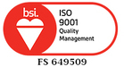
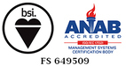

Universitas Sahid Jakarta (USAHID) adalah salah satu unit pendidikan di bawah Yayasan Sahid Jaya yang didirikan pada tanggal 14 Maret 1988. USAHID sebagai Entrepreneurial and Tourism University diarahkan untuk menjadi tenaga profesional yang siap berkarir di industri pariwisata, media massa, pangan, grafika, dan hukum bisnis.
Dengan jumlah 4.500 mahasiswa aktif yang tersebar di 2 (dua) kampus yaitu kampus Sudirman dan kampus Supomo, USAHID memiliki 5 (lima) Fakultas yaitu (Fakultas Ekonomi dan Bisnis, Fakultas Teknologi Pangan dan Kesehatan , Program Doktor Ilmu Komunikasi, Fakultas Teknik Teknologi Industri dan Hukum). Serta Program Pasca Sarjana (Magister Manajemen dan Magister Ilmu Komunikasi)
 Yang begitu mencintai profesi & ilmu mereka.
"Segala pembelajaran praktikal yang saya peroleh dari USAHID sangat berguna dalam menunjang karir saya di Industri manufaktur makanan dan minuman."
"Banyak sekali ilmu yang saya dapatkan di USAHID seperti penanganan kebakaran, pengolahan limbah cair, padat, dan B3 yang tentunya bisa diterapkan dalam pekerjaan saya."
"Beragam teori dan praktik yang bisa didapatkan dari USAHID. Tentu saja dapat saya aplikasikan dalam pekerjaan dan industri komunikasi Indonesia."